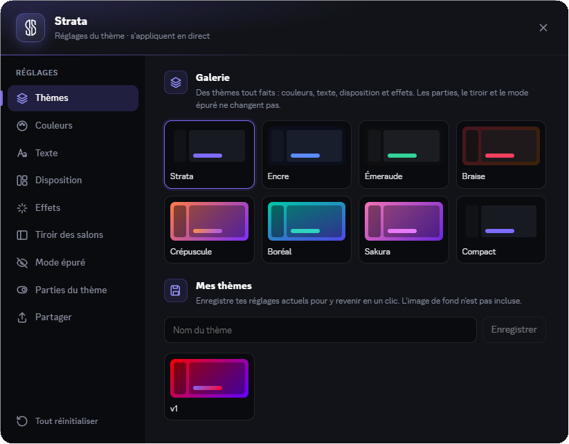
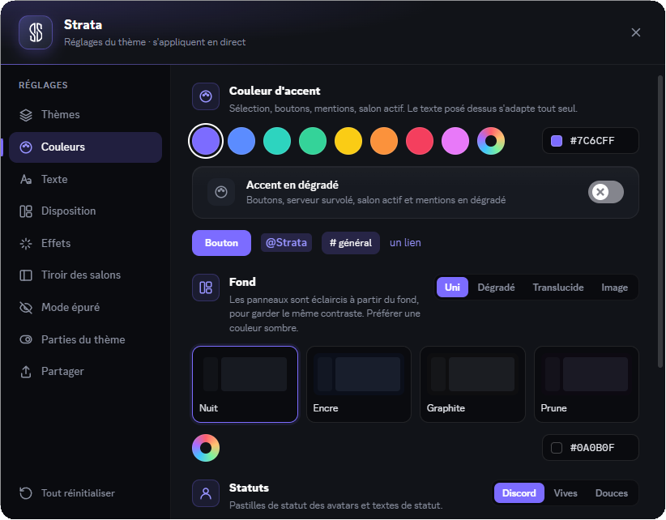
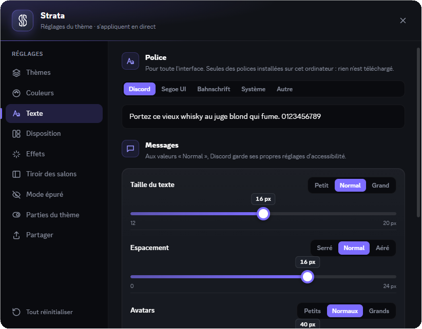
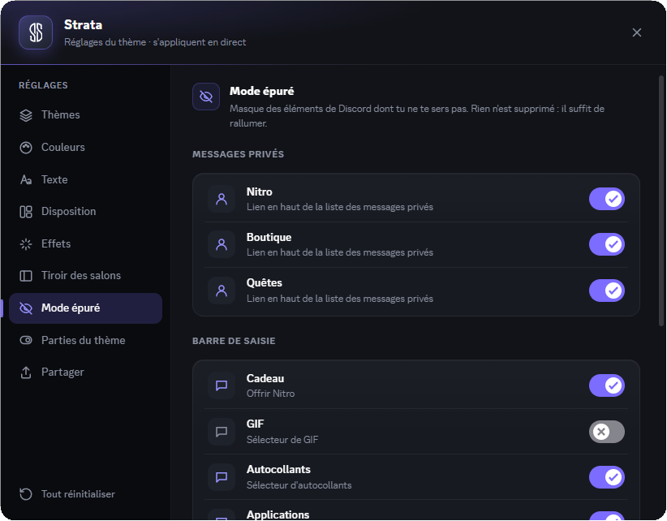
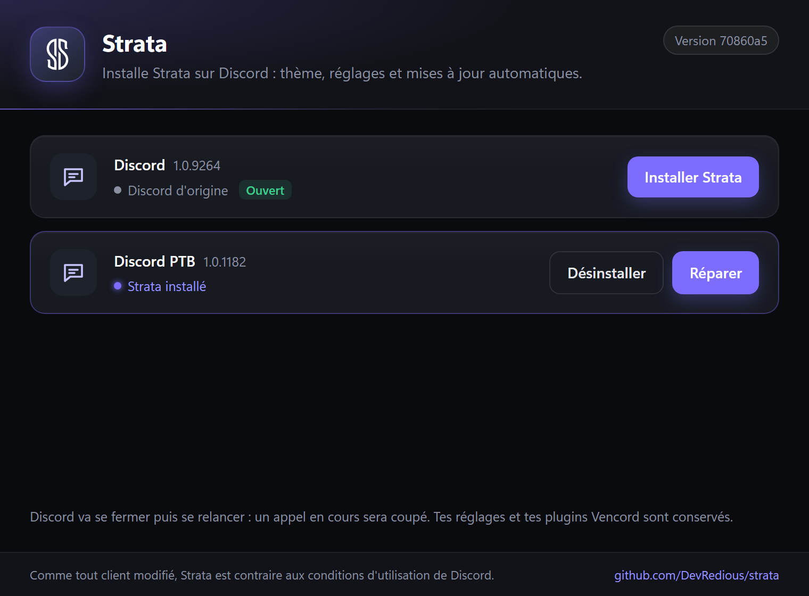

◈
Thèmes en un clic
Une galerie de thèmes tout faits, et vos propres thèmes enregistrés pour passer de l'un à l'autre en un clic.
Strata est une distribution de Vencord pour Discord : un thème sombre à votre couleur, des thèmes tout faits, des fonds en dégradé, translucides ou en image, des panneaux flottants, la liste des salons en tiroir et une fenêtre de réglages intégrée. Libre, au code source ouvert, et mis à jour automatiquement.
Windows 10 et 11, Discord pour ordinateur. Gratuit, sans compte, sans droits administrateur.
Tout se règle dans une fenêtre dédiée, ouverte depuis un bouton dans la barre de titre de Discord. Au premier lancement, elle vous propose de choisir un thème.
Une galerie de thèmes tout faits, et vos propres thèmes enregistrés pour passer de l'un à l'autre en un clic.
Huit couleurs d'accent ou la vôtre, un accent en dégradé, et les couleurs des pastilles de statut.
Uni, en dégradé, translucide façon Nitro, ou une image de votre ordinateur, avec flou et luminosité réglables.
Salons, messages et membres en cartes arrondies : espacement, arrondis, bordures, ombres et lueur d'accent réglables.
Repliée, la liste des salons laisse la place au chat ; elle s'ouvre au survol de la barre des serveurs.
Police installée sur l'ordinateur, taille des messages, espacement, taille et forme des avatars et des icônes de serveur.
Masquez à la carte ce dont vous ne vous servez pas : Nitro, Boutique, Quêtes, boutons cadeau, GIF, autocollants…
Strata se met à jour tout seul, présente ses nouveautés, et se réapplique quand Discord se met à jour.
Tous les plugins de Vencord restent disponibles, et vos réglages Vencord existants sont conservés.
Tout se règle au même endroit, et s'applique en direct, sans redémarrer Discord.





Le lanceur trouve les Discord installés sur le PC et indique pour chacun s'il est d'origine, déjà sous Strata, ou modifié par autre chose. Il est en français et en anglais : la langue se choisit au premier lancement.
La signature est offerte par SignPath.io, avec un certificat de SignPath Foundation. Les détails sont dans notre politique de signature du code. La signature n'est pas encore active.
Intitulé et mention officiels, en anglais : Code signing policy. Free code signing provided by SignPath.io, certificate by SignPath Foundation.
Comme tout client modifié (Vencord, BetterDiscord…), Strata est contraire aux conditions d'utilisation de Discord. Aucun bannissement pour un simple thème n'est connu, mais chacun l'installe en connaissance de cause. Strata n'est affilié ni à Discord Inc. ni aux auteurs de Vencord.